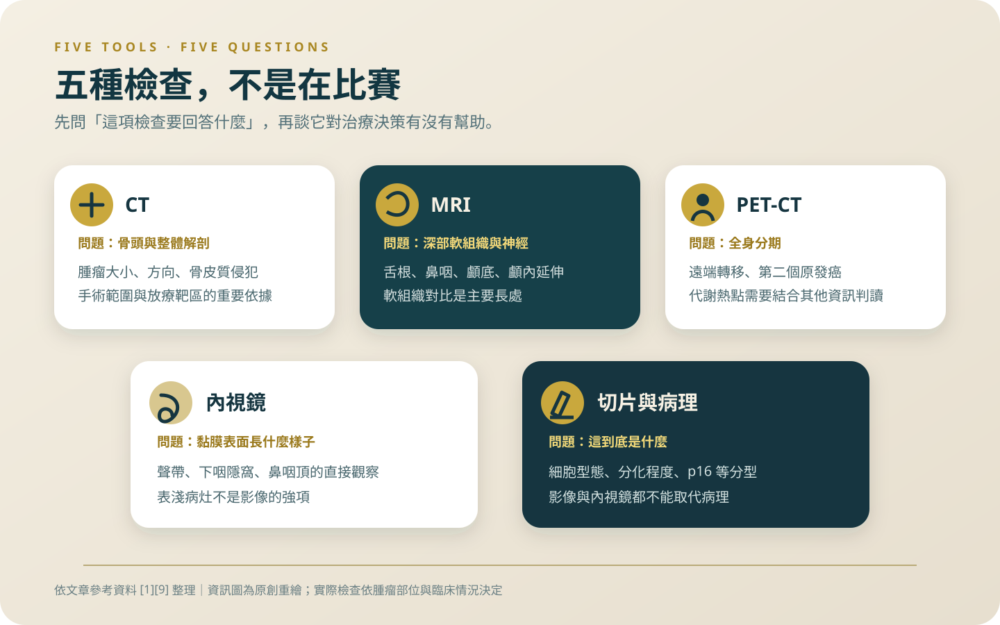
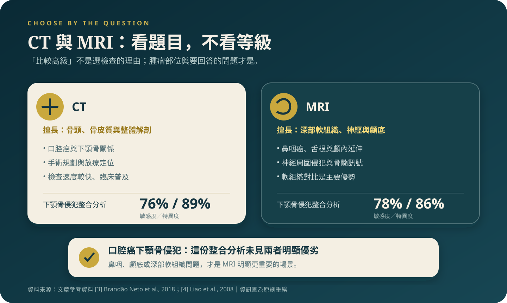
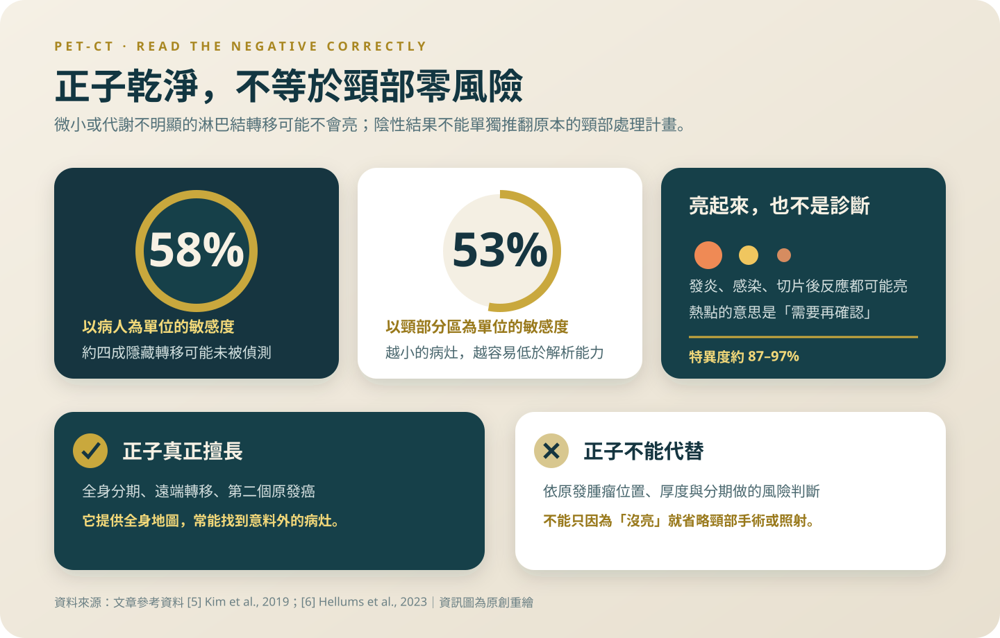

哪個檢查最準？這題問錯了
MRI、CT、正子、內視鏡、切片各自回答不同的問題，沒有哪一項可以稱為最準；其中一個誤解，可能讓你少做該做的頸部治療。
「醫師，這幾個檢查哪一個最準？」這題我每週被問到，而它問錯了。這篇把五種檢查各自負責什麼講清楚，尤其是那句我最怕病人自己推論出來的話：正子照起來乾淨，所以頸部沒事。
「醫師，這幾個檢查裡面哪一個最準？」我每次聽到這句話都要花幾分鐘拆它，因為它問錯了。MRI、CT、正子造影、內視鏡、切片，回答的是五個不同的問題。問哪一個最準，就像問螺絲起子和捲尺哪一個比較好用。真正該問的是：這一項檢查是要幫我回答什麼，答案會怎麼改變治療。
在臺北醫學大學醫療體系（含萬芳醫院）的頭頸癌診療指引裡，頭頸部磁振造影或電腦斷層是必做項目，正子造影列為第三、四期的選擇性檢查，口咽癌的切片必須加做 p16，鼻咽癌的 EBV DNA 則是選擇性檢查[1]。這份清單本身就透露了分工：必做的是定位，選擇性的是找遠端和分型。
五項檢查，五個不同的問題
CT 與 MRI：腫瘤在哪裡、多大、往哪個方向長、有沒有吃到骨頭或深部肌肉。這是決定能不能開刀、要切到哪裡、放射線要照哪一塊的依據。
正子造影（PET-CT）：全身。找的是遠端轉移，以及頭頸癌病人特別容易同時擁有的第二個原發癌。
內視鏡：讓醫師真的看到、也真的碰到黏膜表面。影像看不出來的表淺病灶，靠這個。
切片：唯一能回答「這到底是什麼」的檢查。上面四項全部加起來，都取代不了病理報告。

「MRI 比較高級」？下顎骨這一題不是，鼻咽癌這一題才是
這一題在台灣特別常遇到，因為我們的頭頸癌以口腔癌為主——112 年癌症登記資料裡，口腔癌（含口咽、下咽）在男性標準化發生率排第四[2]。舌癌、頰黏膜癌、牙齦癌會不會侵犯下顎骨，直接決定要不要切一段骨頭、要不要做重建。
常有病人聽說「MRI 比較高級」，要求改做或加做。11 篇研究、477 位病人的診斷性整合分析給的答案是：偵測口腔癌下顎骨侵犯，MRI 敏感度 78%、特異度 86%，CT 敏感度 76%、特異度 89%，sROC 曲線下面積 82.3% 對 82.5%——作者的結論是兩者之間看不到優劣[3]。所以醫師只幫你排了 CT，不代表你被省略了什麼。真正的差別在軟組織範圍、在神經有沒有被侵犯，那才是我們會加做 MRI 的理由。
MRI 真正明顯勝出的地方在鼻咽癌。420 位新診斷鼻咽癌病人同時接受 CT 與 MRI 分期的比較研究顯示，MRI 更精確地呈現早期原發腫瘤的侵犯、也更容易看出深部浸潤，因而造成 T 分期與整體分期出現顯著改變，作者主張鼻咽癌分期應以 MRI 優先於 CT[4]。那份研究用的是當年的 AJCC 第六版，所以它裡面的分期變動百分比不能直接套到現在的版本，但「鼻咽癌看 MRI」這個方向是穩的。頭骨底、海綿竇、顱內延伸，CT 就是看不清楚。

正子照起來乾淨，不代表脖子乾淨
這一段是這篇文章最需要你記住的。
針對臨床上摸不到、影像上也看不到淋巴結轉移（cN0）的頭頸部鱗狀細胞癌病人，18 篇研究、1,044 人的整合分析結果是：以病人為單位，FDG 正子或正子電腦斷層的敏感度只有 0.58、特異度 0.87；以頸側為單位是 0.67 與 0.85；以頸部分區為單位，敏感度掉到 0.53，特異度則有 0.97[5]。
把 0.53 到 0.67 翻成白話：隱藏性的頸部轉移，正子會漏掉三分之一到一半。所以「我的正子報告是乾淨的，那頸部廓清或頸部照射是不是可以免了？」——不行，而且這是我最不希望病人自己做出的推論。頸部要不要處理，是根據原發腫瘤的位置、厚度、分化與整體分期算出來的風險，不是根據正子有沒有亮。正子在這件事上的長處是另一邊：它很少誤報，亮起來的通常有東西。

那正子到底幫上什麼忙
幫在全身。238 位在初次分期時接受正子電腦斷層的頭頸部鱗狀細胞癌病人中，28 位（11.9%）分期被往上修，另有 18 位（7.6%）發現第二個原發惡性腫瘤；作者估計若不做這項檢查，有 19.3% 的病人會被錯誤分期或漏掉另一個癌[6]。
但同一份研究還有一個數字，我認為病人有權利知道：那 28 位被上修分期的人裡面，只有 7 位的治療真的因此改變——以全體 238 人來算大約 3%。分期變動 11.9%，治療改變約 3%，這中間的落差是真的。我講這件事不是要你別做，是因為每年都有病人自費去做正子，期待它翻轉一切。它會提供資訊，多數時候不會改寫劇本。
亮起來的地方，跟健保給付的那一行字
特異度 0.85 到 0.97 聽起來很高，但反過來說，發炎、感染、切片後的組織反應都可能亮。台灣的頭頸癌病人有很高比例長期嚼檳榔或抽菸，慢性口腔黏膜發炎、牙周病與齒源性感染是常態——這讓偽陽性在我們這裡不是理論問題。正子上一個熱點，是「需要再確認」的意思，不是診斷。中央健康保險署自己的衛教文件裡也直接寫出正子在某些癌別「常發生高敏感度及『偽陽性』『偽陰性』的誤判」[7]。
同一份文件也把給付範圍寫得很清楚：「大腸癌、直腸癌、食道癌、頭頸部癌(不包含腦瘤)、原發性肺癌、黑色素癌、甲狀腺癌及子宮頸癌之分期及懷疑復發或再分期」。頭頸癌在名單裡，但給付的用途是分期與懷疑復發時的再分期。同一份文件另外明講：「民眾以『正子造影』來篩檢癌症是必須自費」[7]。所以想每半年做一次正子「確認沒有復發」，那是自費項目，而且要先問清楚這一次是要回答什麼問題。
內視鏡的角色，跟你以為的不太一樣
內視鏡不只是「看一下」。它能到影像的解析度處理不了的地方——聲帶表面、下咽的隱窩、鼻咽頂。窄頻影像（NBI）的加值在追蹤期最明顯：一份頭頸部癌症的系統性回顧與整合分析顯示，在治療後追蹤的情境下，NBI 的敏感度 95%（88–98%）、特異度 96%（92–98%）、曲線下面積 0.99，而傳統白光內視鏡是 72%、72%、0.75[8]。這組數字是治療後追蹤的資料，不能直接搬到還沒治療過的喉部去用，但它說明了一件事：療程結束後的定期內視鏡，價值不比影像低。
「切片的針會不會讓癌細胞跑出去」
這個說法在台灣流傳得很廣，我幾乎每個月都會被問一次。我沒有找到支持它的證據。而反過來的代價是具體的：沒有病理報告，就沒有細胞型態、沒有分化程度、口咽癌沒有 p16，多專科團隊會議也開不下去——歐洲頭頸學會與 ESMO、ESTRO 共同發表的口腔、喉、口咽與下咽鱗狀細胞癌臨床實務指引，就是把診斷、治療與追蹤寫在同一份文件裡的[9]，因為後面每一步都建立在前面那一步的答案上。
真正該擔心的不是那根針，是拖延。因為害怕切片而等三個月再回來的人，我看過；那三個月的代價，比任何一種切片的理論風險都大。
下次門診可以直接問的四句話
第一，我這次排的檢查是要回答什麼問題？第二，如果正子是乾淨的，我的頸部處理計畫會不會改變——如果不會，這項檢查對我的意義是什麼？第三，我的下顎骨判讀是靠 CT 還是 MRI，兩者的結論一致嗎？第四，我的病理報告上有哪些欄位還沒出來，要等到哪一天？
把這四題問完，你對自己這一個月的檢查清單就不會再有「到底哪個最準」的疑問了。
報告上的每一個數字都有它的適用範圍。你的檢查清單為什麼長這樣，是可以問的；覺得某一項沒必要，也可以問。問清楚用途再決定要不要自費，比事後後悔實在。
參考資料
臺北醫學大學醫療體系（附設醫院、萬芳醫院、雙和醫院）（2024）。頭頸癌診療指引（113 年版）。
衛生福利部（2024）。公布112年國人癌症登記資料分析結果 守護健康未來 從癌症篩檢開始。
Brandão Neto, J. S., Aires, F. T., Dedivitis, R. A., Matos, L. L., & Cernea, C. R. (2018). Comparison between magnetic resonance and computed tomography in detecting mandibular invasion in oral cancer: A systematic review and diagnostic meta-analysis. Oral Oncology, 78, 114–118. DOI: 10.1016/j.oraloncology.2018.01.026
Liao, X. B., Mao, Y. P., Liu, L. Z., et al. (2008). How does magnetic resonance imaging influence staging according to AJCC staging system for nasopharyngeal carcinoma compared with computed tomography?. International Journal of Radiation Oncology, Biology, Physics, 72(5), 1368–1377. DOI: 10.1016/j.ijrobp.2008.03.017
Kim, S. J., Pak, K., & Kim, K. (2019). Diagnostic accuracy of F-18 FDG PET or PET/CT for detection of lymph node metastasis in clinically node negative head and neck cancer patients; A systematic review and meta-analysis. American Journal of Otolaryngology, 40(2), 297–305. DOI: 10.1016/j.amjoto.2018.10.013
Hellums, R. N., Pichardo, P. F. A., Altman, K. W., Penn, E., Stavrides, K. P., & Purdy, N. C. (2023). Importance of PET/CT in Initial Workup of Head and Neck Squamous Cell Carcinoma. OTO Open, 7(3), e75. DOI: 10.1002/oto2.75
衛生福利部中央健康保險署。常見醫療院所要求自費之醫療項目－正子斷層造影。
Fu, Z. Y., Li, D. P., Shen, C. L., et al. (2025). Narrow-Band Imaging in Head and Neck Carcinomas: A Systematic Review and Meta-Analysis. The Laryngoscope, 135(1), 34–44. DOI: 10.1002/lary.31750
Machiels, J. P., René Leemans, C., Golusinski, W., Grau, C., Licitra, L., & Grégoire, V. (2020). Squamous cell carcinoma of the oral cavity, larynx, oropharynx and hypopharynx: EHNS-ESMO-ESTRO Clinical Practice Guidelines for diagnosis, treatment and follow-up. Annals of Oncology, 31(11), 1462–1475. DOI: 10.1016/j.annonc.2020.07.011
本文為一般性衛教說明，整理自公開發表的研究與官方公告，不能取代面對面的診療。研究結果適用的族群通常有嚴格條件，是否適用於你的情況，請與你的主治醫師討論。請勿依據本文自行調整、中斷或更換治療。
← 回到頭頸癌專題